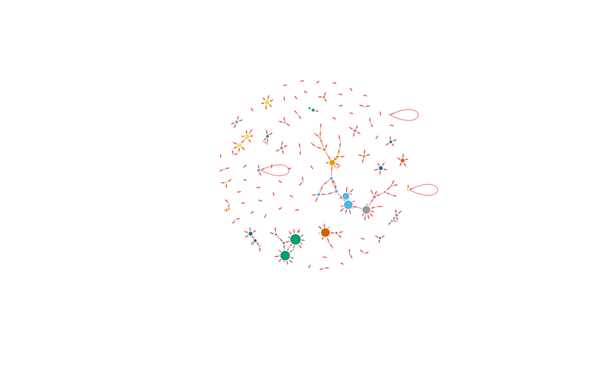

get_started.RmdgraphTweets 4.0 has been redisigned to work hand-in-hand with rtweet. Let’s start by getting some tweets. If you’re unsure how to get started, head over to the rtweet website, everything is very well explained. We’ll get 1,000 tweets on #rstats, exluding re-tweets.
library(rtweet)
# 1'000 tweets on #rstats, excluding retweets
tweets <- search_tweets("#rstats", n = 500, include_rts = FALSE)Now we can start using graphTweets.
gt_edges.igraph object using gt_graph or collect results with gt_collect.If you do not want to return an igraph object, use gt_collect, it will return a list of two data.frames; edges and nodes.
tweets %>%
gt_edges(text, screen_name, status_id) %>%
gt_collect() -> edges
names(edges)
#> [1] "edges" "nodes"(It also returns nodes but it’s empty since we only ran gt_edges).
So far we only used gt_edges to extract the edges, we can also extract the nodes.
tweets %>%
gt_edges(text, screen_name, status_id) %>%
gt_nodes() %>%
gt_collect() -> graph
lapply(graph, nrow) # number of edges and nodes
#> $edges
#> [1] 354
#>
#> $nodes
#> [1] 415
lapply(graph, names) # names of data.frames returned
#> $edges
#> [1] "source" "target"
#>
#> $nodes
#> [1] "nodes" "n_edges"On graphTweets version 0.4.1 gt_nodes returns the number of edges the node is present in: n_edges. Here I used gt_collect, you can, again, use gt_graph if you want to return an igraph object.
Adding nodes has not bring much to table however, gt_nodes takes another argument, meta, which if set to TRUE will return meta data on each node, where availbale*.
tweets %>%
gt_edges(text, screen_name, status_id) %>%
gt_nodes(meta = TRUE) %>%
gt_collect() -> graph
# lapply(graph, names) # names of data.frames returnedNote that you can also pass meta-data to edges if needed.
tweets %>%
gt_edges(text, screen_name, status_id, datetime = "created_at") %>%
gt_nodes(meta = TRUE) %>%
gt_collect() -> graphBefore we plot out graph, we’re going to modify some of the meta-data, a lot of NA are returned (where the meta-data was not available *).
Here I use echarts4r to plot the graph.
library(echarts4r) # for plots
tweets %>%
gt_edges(text, screen_name, status_id, datetime = "created_at") %>%
gt_nodes(meta = TRUE) %>%
gt_collect() -> gt
# replace NAs
gt$nodes$name <- ifelse(is.na(gt$nodes$name), gt$nodes$nodes, gt$nodes$name)
gt$nodes$followers_count <- ifelse(is.na(gt$nodes$followers_count), 0, gt$nodes$followers_count)
e_charts() %>%
e_graph_gl() %>% # use graph GL for performances
e_graph_edges(gt$edges, source, target) %>%
e_graph_nodes(gt$nodes, name, followers_count, n_edges) Let’s look at communities, we’ll return an igraph object with gt_graph so we can easily run a community finding algorithm from the igraph package.
library(igraph)
#> Warning: package 'igraph' was built under R version 3.4.3
#>
#> Attaching package: 'igraph'
#> The following objects are masked from 'package:stats':
#>
#> decompose, spectrum
#> The following object is masked from 'package:base':
#>
#> union
tweets %>%
gt_edges(text, screen_name, status_id) %>%
gt_graph() -> g
# communities
wc <- walktrap.community(g)
V(g)$color <- membership(wc)
# plot
# tons of arrguments because defaults are awful
plot(g,
layout = igraph::layout.fruchterman.reingold(g),
vertex.color = V(g)$color,
vertex.label.family = "sans",
vertex.label.color = hsv(h = 0, s = 0, v = 0, alpha = 0.0),
vertex.size = igraph::degree(g),
edge.arrow.size = 0.2,
edge.arrow.width = 0.3, edge.width = 1,
edge.color = hsv(h = 1, s = .59, v = .91, alpha = 0.7),
vertex.frame.color="#fcfcfc")
* Some nodes are mentioned in tweets only and therefore have no meta-data associated.